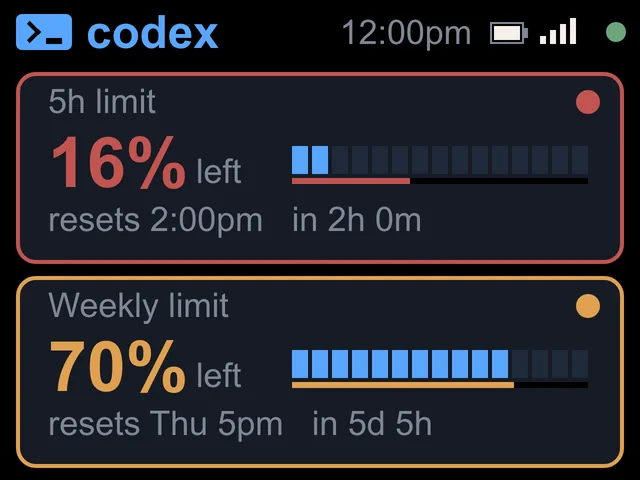

Codex usage limit
Your Codex limits, always in view.
The same numbers as the Codex CLI's /status, on a screen of their own. Updated every minute.
Build yours
From $119


On the screen
Budget left, by limit.
- 5h limit and Weekly limitOne card each, titled the way the Codex CLI's /status titles them.
- Percent leftCodex shows the budget you have left, so codeMeter does too, with a small left beside it. The blue bar drains like a fuel gauge.
- Resets and countdownThe reset time and how long until then, like resets 2:00pm in 2h 0m.
- PaceThe thin line under the bar is time left. If your budget falls behind it, the number and the card outline turn amber, then red.
Try it
Will the 5 hours last?
When it runs low
Amber, then red.

FAQ
Questions.
Does checking use up my Codex limit?
No. codeMeter reads the same usage endpoint the Codex CLI uses for /status. It makes no model calls, so it uses none of your Codex limit.
Which ChatGPT plans work?
Plans that include Codex. Verified on ChatGPT Plus (5-hour and weekly) and Pro (weekly). Business and Enterprise workspaces are not verified yet.
What do the colours mean?
Normal colours mean on pace. Amber means you are using that limit faster than the clock. Red means clearly overspending and likely to hit the limit before it resets.
Does my computer need to stay on?
No. After setup codeMeter runs on its own over Wi-Fi and checks every 60 seconds. Your computer can be off or closed.